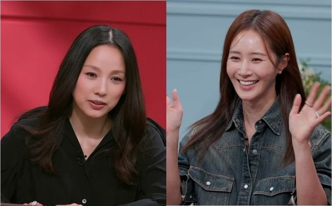
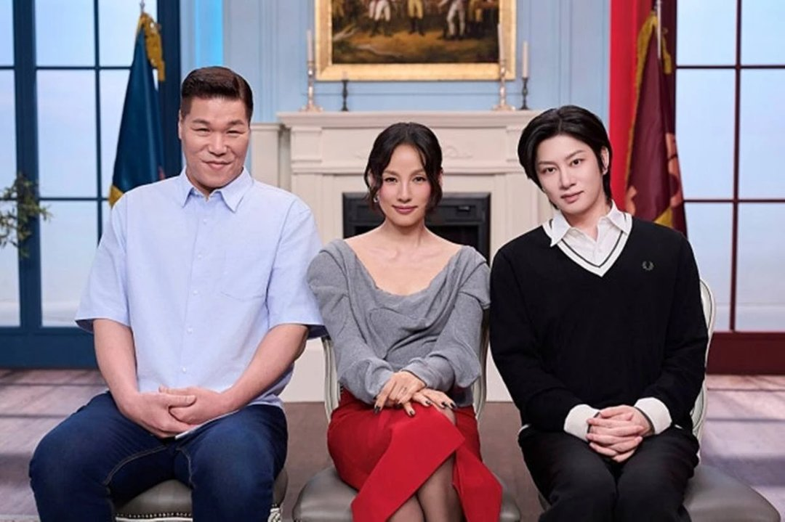
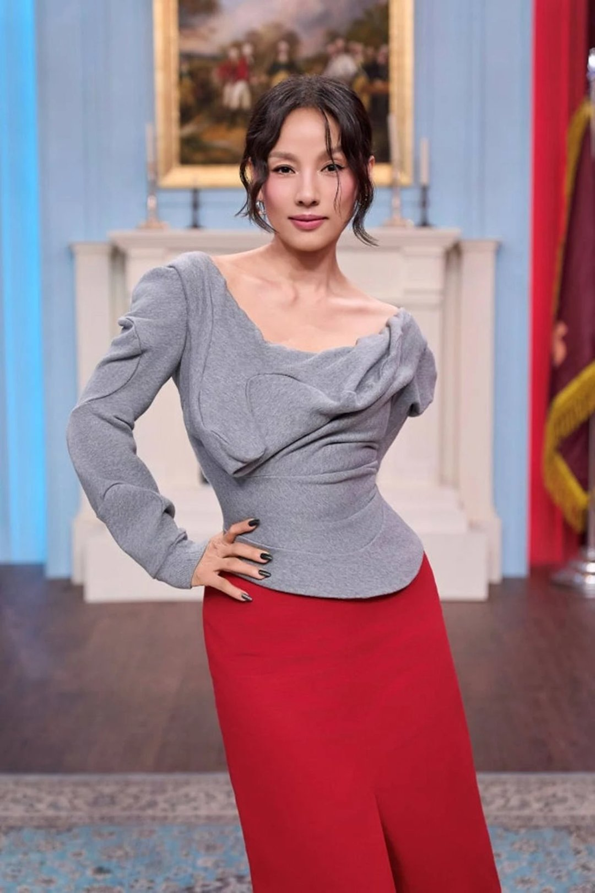

"대한민국에서 효리 언니 안 따라 하는 사람이 누가 있어요." 소녀시대 유리가 이효리 바로 앞에서 한 말이에요. 9일 JTBC '연애전쟁'에 특별 외교관으로 나온 자리였죠. 따라 한다는 말이 어디서 나왔는지, 이효리는 이 말을 어떻게 받았는지 대화 순서대로 정리했어요.
📷 사진 1 자리
▲ JTBC '연애전쟁'의 이효리와 특별 외교관으로 출연한 유리 · 사진=JTBC 제공
질문을 꺼낸 건 김희철
'연애전쟁'은 서장훈, 이효리, 김희철이 진행을 맡아 연인들의 갈등 사연을 듣는 예능이에요. 유리는 이날 특별 외교관으로 이 자리에 함께했어요.
📷 사진 2 자리
▲ '연애전쟁' 진행을 맡은 서장훈, 이효리, 김희철 · 사진=JTBC 제공
먼저 말을 꺼낸 건 김희철이었어요. 요즘 유리가 이효리를 따라 한다는 이야기가 있지 않느냐고 묻자, 유리는 이미 다 들었다는 듯 사람들이 짚은 공통점을 직접 꼽았어요. 요가, 제주도, 그리고 강아지 봉사예요.
이효리가 장난스럽게 "왜 따라 하는 거냐"고 묻자 나온 답이 첫 줄의 그 말이에요. 변명 대신 팬심으로 받아친 셈이죠.
요가는 오히려 유리가 먼저
대화의 방향을 바꾼 건 이효리였어요. 요가는 사실 자기보다 유리가 먼저 했다며, 유리를 원조라고 불렀어요. '따라 하기' 질문으로 시작한 대화가 이효리의 편들기로 마무리된 거예요.
📷 사진 3 자리
▲ '연애전쟁' MC 이효리 · 사진=JTBC 제공
공통점 목록이 나온 배경도 있어요. 유리는 최근 제주로 생활 터전을 옮겼고, MBC '나 혼자 산다'에서 해변 요가와 반려견, 유기견 봉사로 채운 일상을 보여 줬어요. 이효리 역시 제주에 살며 요가와 유기견 보호 활동을 이어 온 사람이라 두 사람을 겹쳐 보는 말이 나왔던 거예요.
효리수와 '이효리수'
이날 대화는 '효리수' 이야기로 넘어갔어요. 효리수는 유리가 효연, 수영과 함께 활동하는 소녀시대 유닛이자 유튜브 콘텐츠 이름이에요. 유리는 인사부터 "언니 이름을 좀 많이 빌렸다"고 했어요.
이효리는 유튜브 썸네일에 '효리'라는 글자가 보여 깜짝 놀랐다며 지분이라도 받아야 하지 않느냐고 받아쳤어요. 유리의 대답이 더 빨랐어요. 앞에 '이'가 붙어야 '이효리수'로 완성된다며 그 자리에서 이효리에게 합류를 권했거든요.
정리하면서 눈에 띈 건 '따라 한다'는 말이 나온 자리에서 이효리가 먼저 원조 자리를 유리에게 넘겼다는 점이에요. 공통점만 나열하면 비교가 나올 법하지만, 두 사람이 직접 한 말로 정리가 끝난 대화였어요. 효리수 영상을 아직 안 봤다면 이 대화를 먼저 보고 찾아보는 편이 이름에 얽힌 농담을 알아듣기 쉬워요.
✍️ 직접 보거나 들은 경험이 있으면 위 문단에 한두 줄 덧붙이세요 (이 안내 줄은 지우기)
유리의 답은 '안 따라 하는 사람이 없다', 이효리의 답은 '요가는 유리가 원조'였어요. 이 장면은 9일 방송된 JTBC '연애전쟁'에서 다시 볼 수 있어요.


